微分方程入門
📌 本章要解決的核心問題
在微積分第一卷中，我們學習了導數和積分這兩大運算。但真正的應用場景往往是：我們知道某個量的變化率，卻不知道這個量本身。例如——我們知道人口的增長速度與當前人口成正比，那麼未來任何時刻的人口是多少？本章引入微分方程（differential equation）這個強大的數學工具來回答這類問題。微分方程是描述物理、生物、工程、經濟等領域中「變化規律」的語言，從自由落體到電路分析、從流行病傳播到人口預測，無所不包。
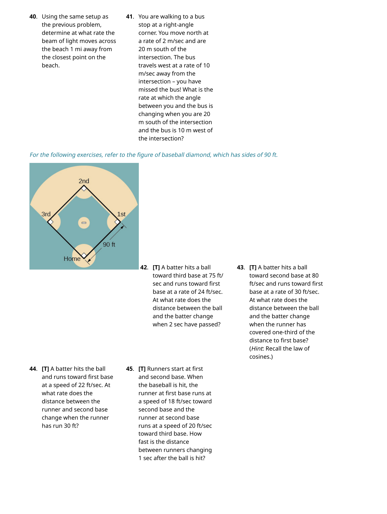
🔑 關鍵概念（10 條）
- 微分方程的階（order）：方程中出現的最高階導數的階數
- 通解 vs 特解：通解包含任意常數，代表一整族解；特解由初始條件決定
- 初始值問題（IVP）：微分方程 + 初始條件 = 唯一確定的解
- 方向場（direction field）：不需求解就能視覺化微分方程解的走勢
- 歐拉法（Euler's Method）：用逐步線性逼近來數值求解微分方程
- 分離變數法：當 $y' = f(x)g(y)$ 時可將 $x$ 和 $y$ 分到等號兩邊再積分
- 邏輯斯諦方程（Logistic Equation）：$\frac{dP}{dt} = rP\left(1 - \frac{P}{K}\right)$——指數增長 + 承載容量限制
- 承載容量（carrying capacity）：環境能長期維持的最大族群數量 $K$
- 積分因子（integrating factor）：$\mu(x) = e^{\int p(x)dx}$——解一階線性方程的萬能鑰匙
- 平衡解與穩定性：$y = c$ 使 $y' = 0$ 的解——可以穩定、不穩定或半穩定
🧭 邏輯鏈
微分方程定義與階數 → 通解與特解 → 方向場（幾何理解）→ 歐拉法（數值解法）→ 分離變數法（代數解法）→ 邏輯斯諦方程（人口模型）→ 積分因子法（一階線性）→ 應用（冷卻、鹽水槽、RL/RC 電路）
4.1 微分方程基礎（Basics of Differential Equations）
微積分是研究變化的數學。
微分方程是一個包含未知函數 $y = f(x)$ 及其一個或多個導數的方程式。一階微分方程的一般形式為 $y' = f(x, y)$。
驗證一個函數是否為某個微分方程的解（solution），方法很直接：把函數和它的導數代入方程，檢查等式是否成立。例如 $y = x^3$ 是 $y' = 3x^2$ 的解，因為對 $y = x^3$ 微分得到 $y' = 3x^2$，代入後等式成立。
一個關鍵的觀察是：微分方程的解通常不唯一。例如 $y' = 3x^2$ 的解可以是 $y = x^3$、$y = x^3 + 5$、$y = x^3 - 2$……因為常數的導數為零，所以把任何常數加到解上都不會改變導數。這就引出了通解（general solution）和特解（particular solution）的區別。
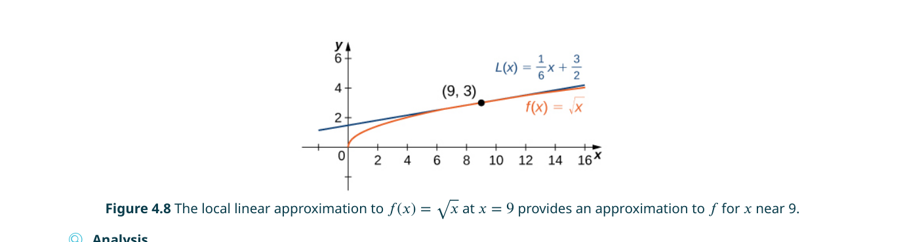
階數（Order）
微分方程的階（order）定義為方程中出現的未知函數的最高階導數的階數。例如 $y' + y = 0$ 是一階（first-order），因為最高導數是一階導數 $y'$；$y'' + 3y' - 4y = \sin x$ 是二階（second-order）；$y''' = 2x$ 是三階。階數決定了通解中會出現多少個任意常數——一階方程的通解有一個常數，二階方程的通解有兩個常數，以此類推。
想像你在開車。如果你只知道「加速度（二階導數）為常數 $a$」，你需要知道兩個資訊才能完全確定位置：初始位置和初始速度。同理，一個 $n$ 階微分方程需要 $n$ 個初始條件才能確定唯一的特解。每一次積分都會引入一個積分常數，因此 $n$ 階方程的通解包含 $n$ 個任意常數。
初始值問題（Initial-Value Problem, IVP）
一個初始值問題由兩部分組成：(1) 一個微分方程，(2) 一個或多個初始條件。初始條件指定了在某一點（通常是 $t = 0$ 或 $x = 0$）處函數及其導數的值。例如：

📝 範例
📝 範例 4.5：解初始值問題求解 $y' = 2x + 1$，$y(0) = 3$。
解：先求通解：對 $y' = 2x + 1$ 積分得到 $y = x^2 + x + C$。代入初始條件 $y(0) = 3$：$0^2 + 0 + C = 3$ → $C = 3$。因此特解為 $y = x^2 + x + 3$。這就是解族中恰好通過 $(0, 3)$ 的那條拋物線。
驗證 $y = e^{-2t}\sin 3t$ 是否為 $y'' + 4y' + 13y = 0$ 的解時，必須小心使用乘積法則和鏈鎖律來計算 $y'$ 和 $y''$。很多學生在對 $e^{-2t}\sin 3t$ 求導時漏掉內層函數的導數，或者忘記乘積法則中的交叉項。一個實用的檢查方法：代入 $t = 0$ 驗算——如果代入後的數字對不上，說明你的導數算錯了。
應用：自由落體（Free Fall）
微分方程最基本的物理應用之一是自由落體。假設一個質量為 $m$ 的棒球在只受重力（忽略空氣阻力）的條件下運動。根據牛頓第二定律 $F = ma$，加速度 $a = v'(t)$，而重力 $F = -mg$（負號表示向下）。因此：
這是一個一階微分方程！初始條件為初始速度 $v(0) = v_0$。求解：積分得到 $v(t) = -gt + v_0$。再積分一次得到位置：$s(t) = -\frac{1}{2}gt^2 + v_0t + s_0$。注意：物體的質量 $m$ 在方程中被約掉了——在無空氣阻力的理想情況下，所有物體以相同的加速度下墜（伽利略的著名結論）。

📝 範例
📝 範例 4.6：棒球的速度一顆棒球從離地 3 公尺的高度以初速 10 m/s 垂直上拋，質量 0.15 kg，只受重力（$g = 9.8$ m/s²）。求 (a) 速度函數 $v(t)$；(b) 2 秒後的速度。
解：(a) 微分方程為 $\frac{dv}{dt} = -9.8$，初始條件 $v(0) = 10$。積分得 $v(t) = -9.8t + 10$。(b) $v(2) = -9.8(2) + 10 = -9.6$ m/s。負號表示棒球正在以 9.6 m/s 的速度下降。
4.2 方向場與數值方法（Direction Fields and Numerical Methods）
在很多情況下，我們無法用初等函數來表示微分方程的解析解（analytical solution）——也就是說，不存在一個由多項式、指數、三角函數等基本函數構成的封閉形式。
方向場（Direction Field / Slope Field）
對於一階微分方程 $y' = f(x, y)$，在平面上的每一點 $(x, y)$，我們都可以計算出一個斜率值 $f(x, y)$——這就是通過該點的解曲線在該點的切線斜率。如果在網格上的大量點都畫上一小段具有該斜率的線段，我們就得到了一個方向場。
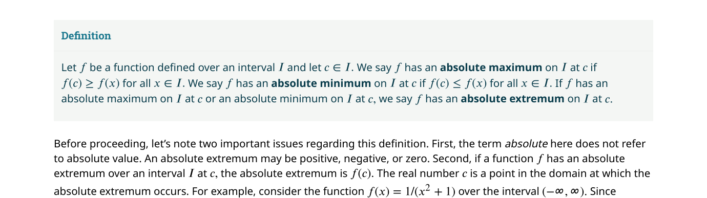
方向場的美妙之處在於：你不需要解出微分方程，就可以「讀出」解的長期行為（long-term behavior）。例如在圖 4.6 中，無論初始溫度是多少，所有解曲線都趨向 $T = 72$——環境溫度。這在數學上被稱為一個漸近穩定平衡解（asymptotically stable equilibrium）。
每一個一階微分方程都有一個獨特的方向場，就像指紋一樣。你可以從方向場中看出：(1) 哪些區域的解在上升/下降；(2) 平衡解在哪裡（水平線段）；(3) 平衡解是穩定還是不穩定（附近的箭頭是「指向」還是「遠離」平衡線）。這讓方向場成為分析微分方程定性行為的最強工具。
平衡解與穩定性
對於自治微分方程（autonomous differential equation）$y' = f(y)$（右側只依賴 $y$，不依賴 $x$），設 $f(y) = 0$ 可以解出平衡解（equilibrium solutions）——也就是常數函數 $y = c$ 使得 $y' = 0$。根據附近解的行為，平衡解分為三類：
- 漸近穩定（asymptotically stable）：附近的所有解都趨向該平衡值
- 漸近不穩定（asymptotically unstable）：附近的所有解都遠離該平衡值
- 半穩定（semi-stable）：一側的解趨向、另一側的解遠離
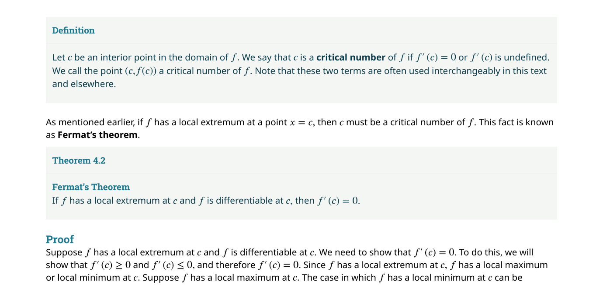
在閱讀方向場時，很多初學者會搞混誰是自變數、誰是應變數。記住：水平軸永遠是自變數（通常是 $x$ 或 $t$），垂直軸永遠是應變數 $y$。方向場中的每一小段線的斜率 $m = y'$ 表示的是：當 $x$ 向右移動一點點時，$y$ 應該沿著斜率 $m$ 的方向變化。不要把方向場中的箭頭誤解為「速度向量場」——它只是切線斜率的圖形化。
🎮 互動模型：方向場與 Euler 法
調整起點和步長，觀察 Euler 路徑與精確解的比較。
歐拉法（Euler's Method）
歐拉法是數值求解微分方程最古老、最直觀的方法。核心思想是：從初始點 $(x_0, y_0)$ 出發，沿著該點的切線方向走一小步（步長 $h$），到達一個新的近似點 $(x_1, y_1)$；然後在那裡重新計算斜率，再走一步……如此反覆。
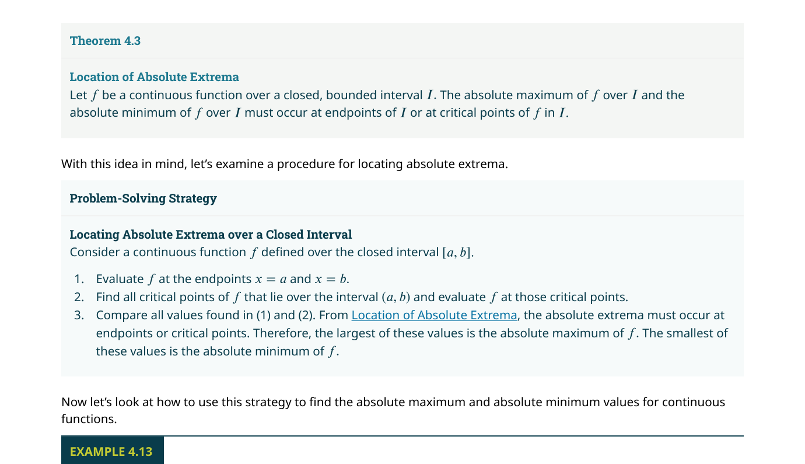
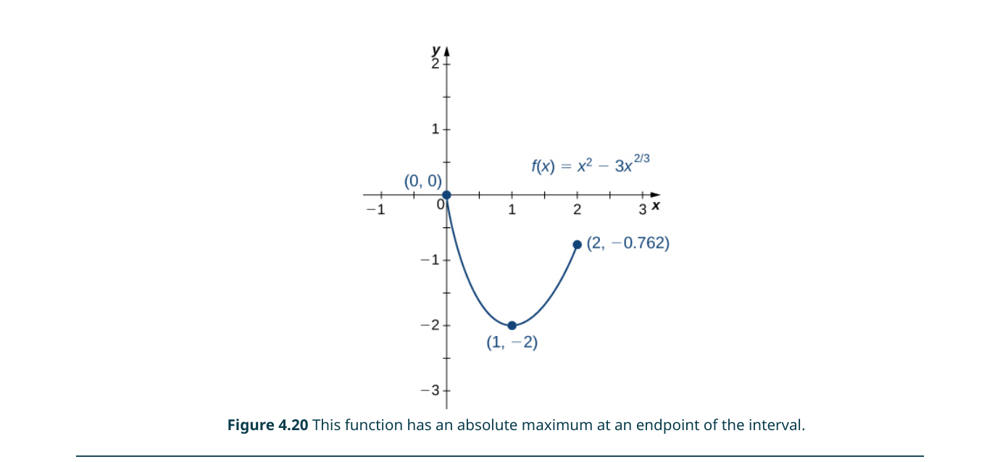
📝 範例
📝 範例 4.9：使用歐拉法對於初始值問題 $y' = x + y$，$y(0) = 1$，使用步長 $h = 0.1$ 生成 $x$ 從 0 到 1 之間的近似值表。
解：$f(x,y) = x + y$，從 $(x_0, y_0) = (0, 1)$ 開始：
$y_1 = 1 + 0.1 \cdot (0 + 1) = 1.1$
$y_2 = 1.1 + 0.1 \cdot (0.1 + 1.1) = 1.22$
$y_3 = 1.22 + 0.1 \cdot (0.2 + 1.22) = 1.362$
……以次類推。真實解為 $y = 2e^x - x - 1$，$y(1) \approx 3.4366$。
歐拉法（10 步）給出 $y(1) \approx 3.1875$——誤差約 7%，但計算極其簡單。使用 $h = 0.01$（100 步）可以將誤差降至約 0.7%。
歐拉法雖然簡單，但它揭示了所有現代數值方法（如 Runge-Kutta 方法）的核心原理：用局部線性近似來追蹤非線性系統的演化。在電腦時代，歐拉法及其變體被嵌入到幾乎所有科學計算軟體中。
4.3 可分離方程（Separable Equations）
如果一個一階微分方程可以寫成 $y' = f(x) \cdot g(y)$ 的形式——即右側可以「分離」成只含 $x$ 的函數乘以只含 $y$ 的函數——我們稱之為可分離微分方程（separable differential equation）。
分離變數法（Separation of Variables）的五步驟
- 找常數解：設 $g(y) = 0$，解出 $y$ 的值——這些是平衡解（常數解）
- 分離變數：重寫為 $\frac{1}{g(y)} dy = f(x) dx$
- 兩邊積分：$\int \frac{1}{g(y)} dy = \int f(x) dx$
- 解出 $y$：如果可能的話，將 $y$ 表示為 $x$ 的顯函數
- 代入初始條件（如有）：解出積分常數 $C$
📝 範例
📝 範例 4.10：分離變數法求 $y' = \frac{x}{y}$ 的通解。
解：Step 1：$g(y) = 1/y$，$g(y) = 0$ 無解（無常數解）。
Step 2：重寫為 $y \, dy = x \, dx$。
Step 3：積分兩邊：$\frac{y^2}{2} = \frac{x^2}{2} + C$。
Step 4：乘以 2：$y^2 = x^2 + 2C$。令 $C_1 = 2C$，得 $y = \pm\sqrt{x^2 + C_1}$。這就是通解——一族雙曲線。
📝 範例
📝 範例 4.11：含初始條件的可分離方程求解 $y' = y(1 - y)$，$y(0) = 0.5$。
解：Step 1：$g(y) = y(1-y) = 0$ → $y = 0$ 或 $y = 1$ 為常數解。
分離變數：$\frac{dy}{y(1-y)} = dx$。使用部分分式：$\frac{1}{y(1-y)} = \frac{1}{y} + \frac{1}{1-y}$。
積分：$\ln|y| - \ln|1-y| = x + C$ → $\ln\left|\frac{y}{1-y}\right| = x + C$。
指數化：$\frac{y}{1-y} = C_1 e^x$。解出 $y$：$y = \frac{C_1 e^x}{1 + C_1 e^x}$。
代入 $y(0) = 0.5$：$\frac{C_1}{1 + C_1} = 0.5$ → $C_1 = 1$。
因此 $y = \frac{e^x}{1 + e^x} = \frac{1}{1 + e^{-x}}$。這正是邏輯斯諦函數！（預告了 4.4 節的內容）
應用一：鹽水槽（Brine Tank / Solution Concentration）
考慮一個裝有 100 公升鹽水的槽，初始含有 4 公斤的鹽。含鹽濃度為 0.5 kg/L 的鹽水以 2 L/min 的速率流入，同時混合均勻的溶液以相同的速率從底部流出（保持體積不變）。問題：槽中鹽量 $u(t)$ 如何隨時間變化？
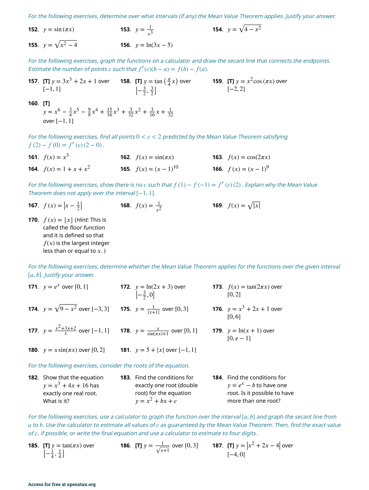
微分方程的建模邏輯是 $u'(t) = \text{流入率} - \text{流出率}$。流入率 = 2 L/min × 0.5 kg/L = 1 kg/min。流出率 = 2 L/min × $\frac{u(t)}{100}$ kg/L = $\frac{u(t)}{50}$ kg/min。因此：
這是一個可分離方程。求解後得到 $u(t) = 50 - 46e^{-t/50}$。當 $t \to \infty$ 時，$u(t) \to 50$ 公斤——這正好對應於「流入濃度 × 槽體積 = 0.5 × 100 = 50」的穩態值。
應用二：牛頓冷卻定律（Newton's Law of Cooling）
牛頓冷卻定律指出：物體溫度變化的速率與物體當前溫度 $T$ 和環境溫度 $T_a$ 之間的差值成正比：
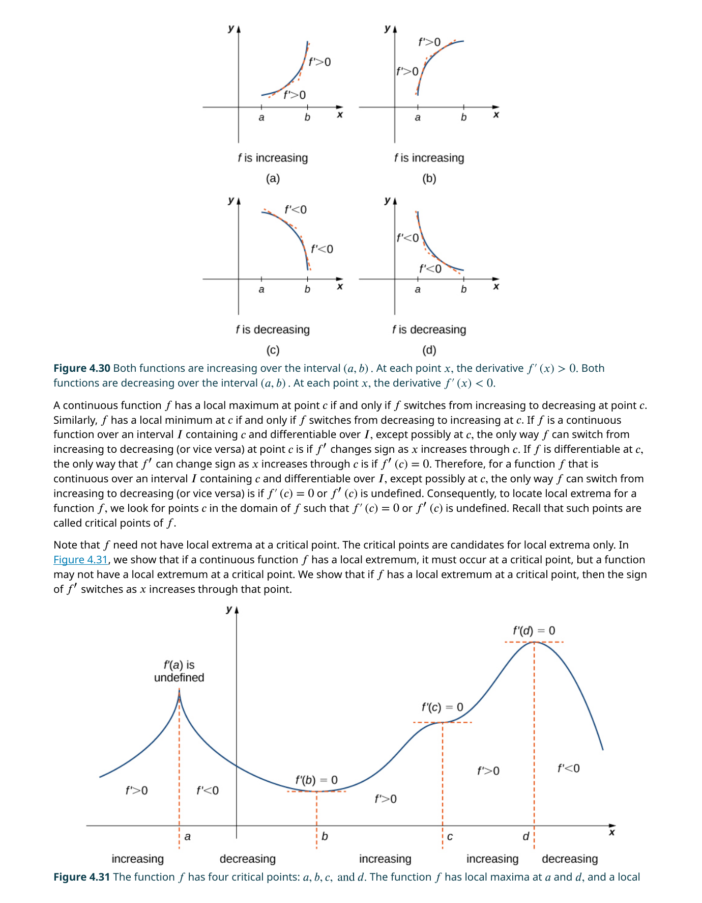
注意 $T' = -k(T - T_a)$ 的解是 $T(t) = T_a + (T_0 - T_a)e^{-kt}$。這不是單純的指數衰減，而是以環境溫度為漸近線的指數趨近。實際上，如果你做變數變換 $U = T - T_a$（溫差），方程變成 $U' = -kU$——就是最簡單的指數衰減！這個「先平移再求解」的思路在微分方程中反覆出現。
在分離變數的 Step 1 中，必須檢查 $g(y) = 0$ 是否給出常數解。例如在解 $y' = y^2 - 4$ 時，$y = \pm 2$ 是兩個常數解。如果你跳過這一步直接分離變數，就會「遺失」這些解。數學上這是因為你在分離時除以了 $g(y)$，而除以零是非法的——被除掉的解必須手動補回來。
4.4 邏輯斯諦方程（The Logistic Equation）
人口增長的最簡單模型是指數模型：$\frac{dP}{dt} = rP$，其中 $r > 0$ 是增長率。
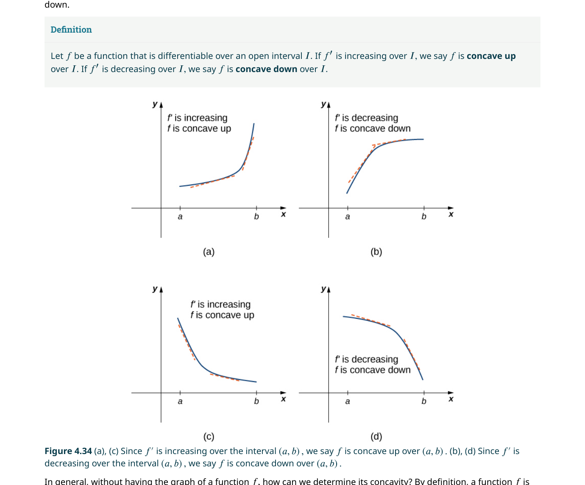
邏輯斯諦方程的定性分析
邏輯斯諦方程是一個自治微分方程（右側只依賴 $P$）。設 $f(P) = rP(1 - P/K) = 0$，得到兩個平衡解：$P = 0$（滅絕）和 $P = K$（承載容量）。
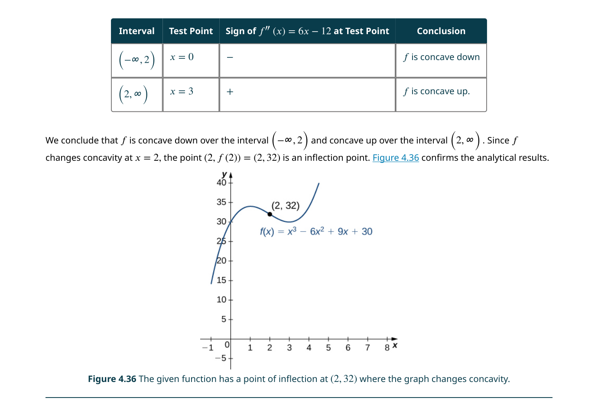
相位線（phase line）是分析自治微分方程的強大工具。當 $0 < P < K$ 時，$P/K < 1$，所以 $P' > 0$——人口增長。當 $P > K$ 時，$P/K > 1$，所以 $P' < 0$——人口減少（資源不足以支撐過多個體）。無論從哪個正初始值出發，$P(t)$ 都趨向 $K$。
邏輯斯諦方程的完整推導（求解過程）
📐 推導實驗室：邏輯斯諦方程的解析解
以下是從微分方程到顯式解的完整推導。這使用了分離變數法和部分分式分解——兩個在 4.3 節中學到的核心技術。
🔍 完整推導：從 $\frac{dP}{dt} = rP\left(1 - \frac{P}{K}\right)$ 到 $P(t) = \frac{K}{1 + \left(\frac{K-P_0}{P_0}\right)e^{-rt}}$
這條 S 形曲線有一個重要的特徵：反曲點（inflection point）發生在 $P = K/2$ 處（當 $P_0 < K/2$ 時）。在反曲點之前，人口加速增長（$P'' > 0$，concave up）；在反曲點之後，增長開始減速（$P'' < 0$，concave down），最終趨於平穩。這個特性使邏輯斯諦模型成為描述「先快後慢」增長現象（如技術採納、流行病傳播、市場滲透率）的首選工具。
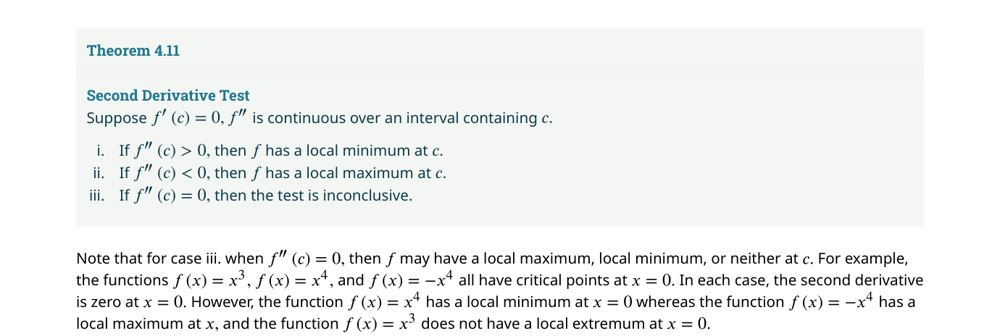
📝 範例
📝 範例 4.14：肯塔基州鹿群模型根據肯塔基州魚類與野生動物資源部的數據：(a) 建立初始值問題；(b) 求解；(c) 預測 3 年後的人口，並與「每 3 年翻倍」的指數預測比較。
解：(a) $P_0 = 900,000$，$r = 0.2311$（基於每 3 年翻倍的觀察），$K = 1,072,560$。IVP：$\frac{dP}{dt} = 0.2311P\left(1 - \frac{P}{1,072,560}\right)$，$P(0) = 900,000$。
(b) $P(t) = \frac{1,072,560}{1 + \left(\frac{1,072,560 - 900,000}{900,000}\right)e^{-0.2311t}} \approx \frac{1,072,560}{1 + 0.1917e^{-0.2311t}}$。
(c) 3 年後：$P(3) \approx 1,018,690$。指數預測（每 3 年翻倍）：$900,000 \times 2 = 1,800,000$。邏輯斯諦模型的預測遠低於指數模型——因為當 $P$ 接近 $K$ 時，增長速度急劇下降。實際的生物學觀察證實了這個飽和效應。
指數 vs 邏輯斯諦：一目了然的對比
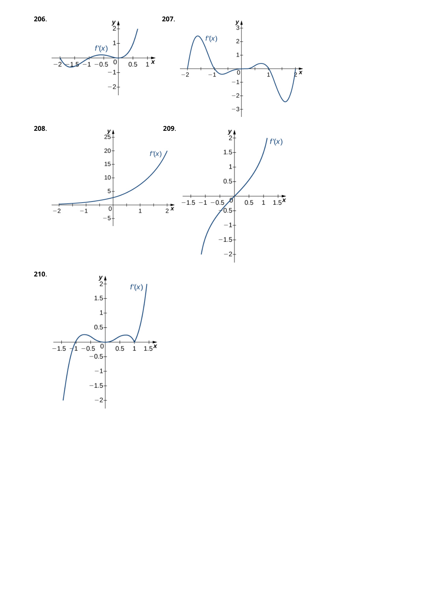
因子 $(1 - P/K)$ 被稱為「抑制項」（inhibition term）。當 $P = 0$ 時，抑制項 = 1，增長不受限；當 $P = K$ 時，抑制項 = 0，增長停止。任何滿足這兩個邊界條件的遞減函數都可以作為抑制項，但線性形式 $1 - P/K$ 是最簡單的選擇——而且它恰好讓微分方程變得可分離且可解析求解。在更複雜的模型中（如 Gompertz 方程），抑制項採用對數形式 $\ln(K/P)$，這會產生不對稱的 S 形曲線。
很多學生認為 $r$ 越大，人口就增長得越快。這只對了一半。實際的增長速度是 $\frac{dP}{dt} = rP(1 - P/K)$——它同時取決於 $r$、當前人口 $P$、以及 $P$ 與 $K$ 的比值。當 $P$ 接近 $K$ 時，即使 $r$ 很大，實際增長速度也接近零。在閱讀人口模型的研究報告時，務必區分這兩個概念。
閾值族群模型（Threshold Population Model）
邏輯斯諦模型的一個重要推廣是加入閾值族群（threshold population）$T$——物種生存所需的最小族群數量。微分方程變為：
4.5 一階線性方程（First-order Linear Equations）
一階線性微分方程的標準形式是 $y' + p(x)y = q(x)$。
標準形式（Standard Form）
一階微分方程是線性的，若且唯若它可以寫成 $a(x)y' + b(x)y = c(x)$，其中 $y$ 和 $y'$ 的次數都是 1（沒有 $y^2$、$\sin y$、$yy'$ 等非線性項）。除以 $a(x)$（假設 $a(x) \neq 0$）得到標準形式：
例如 $y' + \frac{2}{x}y = x^2$ 是線性的（$p(x) = 2/x$，$q(x) = x^2$）。而 $y' + y^2 = \sin x$ 不是線性的（因為 $y^2$ 項）。$y' + \sin y = 0$ 也不是線性的（因為 $\sin y$ 不是 $y$ 的線性函數）。線性這個條件看似嚴格，但它涵蓋了大量有實際意義的方程——從 RL 電路到空氣阻力下的自由落體。
積分因子法（Integrating Factor Method）
積分因子法的核心思想是：找到一個函數 $\mu(x) > 0$，使得當我們用 $\mu(x)$ 乘以標準形式 $y' + p(x)y = q(x)$ 的兩邊後，左側恰好是某個乘積的導數。具體來說：
乘以 $\mu(x)$ 後的方程變為 $\mu(x)y' + \mu(x)p(x)y = \mu(x)q(x)$。由於 $\mu'(x) = \mu(x)p(x)$（根據 $\mu(x)$ 的定義），左側恰好等於 $(\mu(x)y)'$。因此：
兩邊對 $x$ 積分：$\mu(x)y = \int \mu(x)q(x)\,dx + C$。最終解出 $y$：
🔍 為什麼積分因子恰好是 $e^{\int p(x)dx}$？
📝 範例
📝 範例 4.16：積分因子法求 $xy' + 2y = x^2$ 的通解（假設 $x > 0$）。
解：Step 1：化為標準形式。除以 $x$：$y' + \frac{2}{x}y = x$。所以 $p(x) = 2/x$，$q(x) = x$。
Step 2：計算積分因子 $\mu(x) = e^{\int \frac{2}{x}dx} = e^{2\ln x} = x^2$。
Step 3：乘以 $\mu(x)$：$x^2y' + 2xy = x^3$。注意左側等於 $(x^2y)'$。
Step 4：積分：$x^2y = \int x^3 dx = \frac{x^4}{4} + C$。
Step 5：$y = \frac{x^2}{4} + \frac{C}{x^2}$。
📝 範例
📝 範例 4.17：含初始條件的積分因子法求解 $y' + y\tan x = \sec x$，$y(0) = 2$。
解：$p(x) = \tan x$，$q(x) = \sec x$。$\mu(x) = e^{\int \tan x\,dx} = e^{\ln|\sec x|} = \sec x$（取 $x$ 在 $(-\pi/2, \pi/2)$ 範圍內，$\sec x > 0$）。
乘以 $\mu(x)$：$\sec x \cdot y' + \sec x \tan x \cdot y = \sec^2 x$。左側 = $(\sec x \cdot y)'$。
積分：$\sec x \cdot y = \int \sec^2 x\,dx = \tan x + C$。
$y = \tan x \cos x + C\cos x = \sin x + C\cos x$。
代入 $y(0) = 2$：$\sin 0 + C\cos 0 = C = 2$。所以 $y = \sin x + 2\cos x$。
應用一：空氣阻力下的自由落體
在 4.1 節中我們假設沒有空氣阻力。現在加入與速度成正比的空氣阻力 $F_{\text{air}} = -kv$（$k > 0$）。由牛頓第二定律：
這是一個一階線性微分方程！$p(t) = k/m$，$q(t) = -g$。積分因子 $\mu(t) = e^{(k/m)t}$。求解過程與範例 4.16 類似。
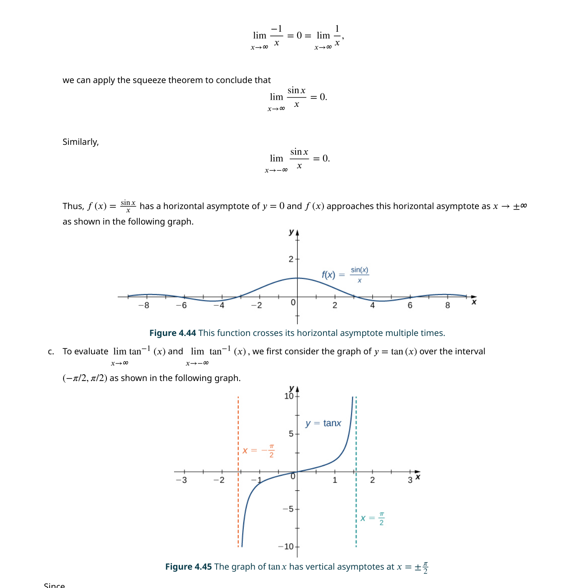
📝 範例
📝 範例 4.18：有空氣阻力的壁球一顆質量 0.0427 kg 的壁球以初速 2 m/s 垂直上拋，空氣阻力 $F_{\text{air}} = -0.5v$。(a) 求 $v(t)$；(b) 何時到達最高點？(c) 若從 1 公尺高拋出，最高高度？
解：(a) $m = 0.0427$，$k = 0.5$。$\frac{dv}{dt} + \frac{0.5}{0.0427}v = -9.8$ → $v' + 11.71v = -9.8$。
$\mu(t) = e^{11.71t}$。推導後：$v(t) = -0.837 + (2 + 0.837)e^{-11.71t} = -0.837 + 2.837e^{-11.71t}$。
(b) 設 $v(t) = 0$：$2.837e^{-11.71t} = 0.837$ → $t \approx 0.104$ 秒。
(c) $s(t) = \int v(t)dt = -0.837t - 0.242e^{-11.71t} + C$。$s(0) = 1$ → $C = 1.242$。$s(0.104) \approx 1.088$ 公尺——壁球幾乎沒有上升多少，因為空氣阻力對於輕物體來說非常顯著。
應用二：RL 與 RC 電路
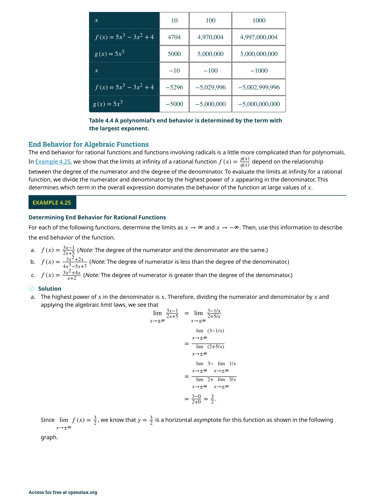
根據 Kirchhoff 迴路定律，閉合電路中各元件的電壓降之和等於電源的電動勢。對於 RL 電路（無電容器）：
這是一個標準的一階線性微分方程：$\frac{di}{dt} + \frac{R}{L}i = \frac{E(t)}{L}$。積分因子 $\mu(t) = e^{(R/L)t}$。對於常數電壓 $E(t) = E_0$ 和初始條件 $i(0) = 0$，解為：
這和鹽水槽的解形式上完全一樣！初始電流為零，最終趨向穩態值 $E_0/R$（歐姆定律）。時間常數 $\tau = L/R$ 決定了趨近穩態的速度——$\tau$ 越小，電路響應越快。
注意 RL 電路（電流）、鹽水槽（鹽量）、和牛頓冷卻（溫度）的微分方程結構完全一致：都是 $y' + \alpha y = \beta$（$\alpha, \beta$ 為常數）。解的形式也都是 $y(t) = \frac{\beta}{\alpha} + (y_0 - \frac{\beta}{\alpha})e^{-\alpha t}$。一旦你認出這個模式，一大類看似不相關的應用問題都變成了同一個數學問題。這就是微分方程作為「萬能建模語言」的力量。
積分因子法要求 $y'$ 的係數為 1。很多學生在看到 $2xy' + y = e^x$ 時，直接說 $p(x) = 2x$ 並計算 $\mu(x) = e^{x^2}$。但正確的做法是先除以 $2x$：$y' + \frac{1}{2x}y = \frac{e^x}{2x}$，此時 $p(x) = \frac{1}{2x}$，$\mu(x) = e^{\int \frac{1}{2x}dx} = \sqrt{x}$。跳過「除以 $a(x)$」這一步是積分因子法中最常見的錯誤來源。
📋 關鍵概念回顧（Key Concepts）
- 微分方程（Differential Equation）：包含未知函數及其導數的方程式。階數由最高階導數決定，通解中包含與階數相同數量的任意常數。
- 初始值問題（Initial Value Problem, IVP）：微分方程加上初始條件，可唯一決定一個特解。這是所有實際科學與工程應用的起點。
- 方向場（Direction Field）：在座標平面上畫出短線段表示 $y' = f(x,y)$ 在每個點的斜率，提供解的定性行為——即使不求解析解也能看出解的長期趨勢。
- 歐拉法（Euler's Method）：最簡單的數值解法，以 $y_{n+1} = y_n + h \cdot f(x_n, y_n)$ 逐步近似。步長 $h$ 越小精度越高，但計算量越大。
- 分離變數法（Separation of Variables）：將 $y' = f(x)g(y)$ 重寫為 $\frac{dy}{g(y)} = f(x)dx$，兩邊積分求解。需注意 $g(y)=0$ 可能給出常數解。
- 邏輯斯諦方程（Logistic Equation）：$\frac{dP}{dt} = rP\left(1 - \frac{P}{K} ight)$。$r$ 為內秉增長率，$K$ 為環境承載容量。解為 S 形曲線，從指數增長逐漸趨近 $K$。
- 一階線性微分方程：標準形式 $y' + p(x)y = q(x)$。使用積分因子 $\mu(x) = e^{\int p(x)dx}$ 將左側化為 $(\mu y)'$，對兩邊積分求解。
- 積分因子（Integrating Factor）：$\mu(x) = e^{\int p(x)dx}$ 是求解一階線性方程的關鍵。乘以 $\mu(x)$ 後左側恰好是 $(\mu(x)y)'$。
- 混合問題（Mixing Problems）：鹽水槽等應用——鹽量變化率 = 流入速率 − 流出速率，導出一階線性方程。
- 牛頓冷卻定律（Newton's Law of Cooling）：$\frac{dT}{dt} = -k(T - T_s)$，物體溫度變化率與環境溫差成正比，為可分離方程。
- 平衡解與穩定性：$y' = f(y)$ 的常數解 $y = y^*$（滿足 $f(y^*)=0$）稱為平衡解。若解的軌跡趨近平衡解則為穩定，遠離則不穩定。
📐 關鍵公式（Key Equations）
| 公式 | 說明 |
|---|---|
| $$\frac{dy}{dx} = f(x)g(y) \;\Longrightarrow\; \int \frac{dy}{g(y)} = \int f(x)\,dx$$ | 分離變數法 |
| $$y_{n+1} = y_n + h \cdot f(x_n, y_n)$$ | 歐拉法 |
| $$\frac{dP}{dt} = rP\left(1 - \frac{P}{K} ight)$$ | 邏輯斯諦微分方程 |
| $$P(t) = \frac{K}{1 + \left(\frac{K-P_0}{P_0} ight)e^{-rt}}$$ | 邏輯斯諦方程的解 |
| $$y' + p(x)y = q(x)$$ | 一階線性微分方程標準形式 |
| $$\mu(x) = e^{\int p(x)\,dx}$$ | 積分因子 |
| $$\frac{d}{dx}\bigl[\mu(x)y\bigr] = \mu(x)q(x) \;\Longrightarrow\; y = \frac{1}{\mu(x)}\int \mu(x)q(x)\,dx$$ | 積分因子法求解 |
| $$\frac{dT}{dt} = -k(T - T_s) \;\Longrightarrow\; T(t) = T_s + (T_0 - T_s)e^{-kt}$$ | 牛頓冷卻定律 |
| $$\frac{dy}{dt} = ky \;\Longrightarrow\; y(t) = y_0 e^{kt}$$ | 指數增長 / 衰減 |
| $$\frac{dA}{dt} = (\text{流入速率}) - (\text{流出速率})$$ | 混合問題基本方程 |
| $$y' = f(y) \;\text{的平衡解:}\; f(y^*) = 0$$ | 平衡解（Equilibrium Solution） |
本章摘要
本章建立了微分方程的完整基礎——從基本定義到三種主要求解方法。以下是七個最重要的觀念：
- 微分方程 = 包含未知函數及其導數的方程式——階數決定通解中任意常數的個數
- 初始值問題（IVP）：微分方程 + 初始條件 = 唯一特解——這是所有實際應用的起點
- 方向場提供定性分析（不求解析解也能看出解的長期行為），歐拉法提供數值近似
- 分離變數法是求解 $y' = f(x)g(y)$ 的標準方法——適用於大量物理應用（冷卻、鹽水槽）
- 邏輯斯諦方程 $P' = rP(1 - P/K)$ 是人口模型的黃金標準——指數增長 + 承載容量限制 → S 形曲線
- 積分因子法 $\mu(x) = e^{\int p(x)dx}$ 是解一階線性方程 $y' + p(x)y = q(x)$ 的萬能工具
- 三大應用領域：（1）力學（自由落體 ± 空氣阻力）；（2）熱力學（牛頓冷卻）；（3）電路（RL/RC 電路）——全都可以化為本章學過的方程類型
| 方法 | 適用方程類型 | 核心技巧 | 典型應用 |
|---|---|---|---|
| 方向場 + 歐拉法 | 任何 $y' = f(x,y)$ | 幾何直覺 / 逐步線性近似 | 無法求得解析解時的備案 |
| 分離變數法 | $y' = f(x)g(y)$ | $\int \frac{dy}{g(y)} = \int f(x)dx$ | 人口增長、冷卻、鹽水槽 |
| 邏輯斯諦公式 | $P' = rP(1 - P/K)$ | 定理 4.2 直接套用 | 族群動態、技術採納、流行病 |
| 積分因子法 | $y' + p(x)y = q(x)$ | $\mu(x) = e^{\int p(x)dx}$ | 空氣阻力、RL/RC 電路 |
⚠️ 初學者常見錯誤
在執行分離變數法的 Step 2（除以 $g(y)$）之前，必須先檢查 $g(y) = 0$ 的解。例如在解 $y' = y(2 - y)$ 時，$y = 0$ 和 $y = 2$ 是兩個平衡解。如果你直接分離為 $\frac{dy}{y(2-y)} = dx$，你在過程中已經假設了 $y \neq 0$ 和 $y \neq 2$——那些被除掉的解必須手動補回來。實務上，遺失常數解可能導致你錯過整個系統的穩態行為。
積分因子 $\mu(x) = e^{\int p(x)dx}$ 中的 $p(x)$ 必須是標準形式 $y' + p(x)y = q(x)$ 中 $y$ 的係數。如果你看到 $2y' + 4y = e^x$ 就直接說 $p(x) = 4$，那就錯了——正確做法是先除以 2 得到 $y' + 2y = \frac{1}{2}e^x$，此時 $p(x) = 2$。養成第一步永遠寫出標準形式的習慣，可以避免大量不必要的計算錯誤。
並非所有一階方程要嘛是線性、要嘛是可分離——這兩個分類有交集但互不包含。例如 $y' = xy$ 既是線性（$p(x) = -x$，$q(x) = 0$）又是可分離（$f(x) = x$，$g(y) = y$）。但 $y' = x + y$ 是線性而非可分離；$y' = y^2 \sin x$ 是可分離而非線性；$y' = \sin(xy)$ 兩者都不是。做題目前先判斷方程類型，選擇正確的求解策略——這是微分方程解題的第一步也是最重要的一步。
在積分過程中，$\int \frac{1}{y} dy = \ln|y| + C$，不是 $\ln y + C$。很多初學者忽略絕對值，然後在指數化時得到 $y = Ce^{f(x)}$ 而非 $|y| = Ce^{f(x)}$。雖然對於很多應用（如人口模型，$P > 0$ 是物理約束）絕對值可以安全移除，但如果不寫絕對值就直接「變號」，邏輯上是不嚴格的。養成先寫 $|y|$，再論證正負號的習慣。
歐拉法每步的局部誤差是 $O(h^2)$，但經過 $n = (b-a)/h$ 步之後，全局誤差累積為 $O(h)$。很多初學者認為 $h = 0.1$ 就足夠精確，但在長區間上誤差可能大到使結果完全不可靠。一個好的實務習慣：用兩個不同的步長（如 $h$ 和 $h/2$）計算，比較結果差異來估計誤差——如果差異仍然很大，繼續減半步長。
✅ 自我檢測（Self-Check）
完成以下題目檢驗你對本章核心概念的掌握程度。點擊展開查看答案。
題 1：分離變數法 — 求解 $y' = xy$，$y(0) = 2$
答案：分離變數：$\frac{dy}{y} = x\,dx$（$y \neq 0$）。積分：$\ln|y| = \frac{x^2}{2} + C$。
指數化：$|y| = e^{x^2/2 + C} = C_1 e^{x^2/2}$。代入 $y(0)=2$：$C_1 = 2$。因此 $y = 2e^{x^2/2}$。
題 2：積分因子法 — 求解 $y' + 2y = e^x$，$y(0) = 0$
答案：標準形式 $y' + 2y = e^x$，$p(x) = 2$，積分因子 $\mu = e^{\int 2\,dx} = e^{2x}$。
乘 $\mu$：$e^{2x}y' + 2e^{2x}y = e^{3x}$ → $\frac{d}{dx}(e^{2x}y) = e^{3x}$。
積分：$e^{2x}y = \frac{1}{3}e^{3x} + C$ → $y = \frac{1}{3}e^x + Ce^{-2x}$。
代入 $y(0)=0$：$0 = \frac{1}{3} + C$ → $C = -\frac{1}{3}$。故 $y = \frac{1}{3}(e^x - e^{-2x})$。
題 3：邏輯斯諦方程 — $\frac{dP}{dt} = 0.1P(1 - P/100)$ 的平衡解為何？穩定嗎？
答案：設 $f(P) = 0.1P(1 - P/100) = 0$ → $P = 0$ 或 $P = 100$。
當 $0 < P < 100$：$f(P) > 0$ → $P$ 增加（箭頭指向 $P=100$）。
當 $P > 100$：$f(P) < 0$ → $P$ 減少（箭頭指向 $P=100$）。
因此 $P = 0$ 是不穩定平衡，$P = 100$ 是漸近穩定平衡（承載容量）。
題 4：歐拉法 — 對 $y' = x + y$，$y(0) = 1$，用步長 $h=0.1$ 求 $y(0.2)$ 的近似值
答案：$f(x,y) = x + y$。從 $(x_0, y_0) = (0, 1)$ 開始。
第一步：$y_1 = 1 + 0.1 \cdot (0 + 1) = 1.1$，此時 $x_1 = 0.1$。
第二步：$y_2 = 1.1 + 0.1 \cdot (0.1 + 1.1) = 1.1 + 0.12 = 1.22$。
因此 $y(0.2) \approx 1.22$。
題 5：牛頓冷卻定律 — 咖啡初始 $90^\circ$C，室溫 $25^\circ$C，1 分鐘後降至 $75^\circ$C，求冷卻常數 $k$
答案：$T' = -k(T - 25)$，解為 $T(t) = 25 + (90 - 25)e^{-kt} = 25 + 65e^{-kt}$。
$T(1) = 75$ → $75 = 25 + 65e^{-k}$ → $50 = 65e^{-k}$ → $e^{-k} = 50/65 = 10/13$。
取對數：$-k = \ln(10/13)$ → $k = \ln(13/10) \approx 0.262$。
📚 延伸資源
- 3Blue1Brown — Differential Equations：YouTube 系列，提供微分方程的幾何直覺和視覺化理解
- Khan Academy — Differential Equations：互動練習，涵蓋可分離方程、積分因子、邏輯斯諦模型
- Desmos Slope Field Generator：線上工具，可即時生成任意一階微分方程的方向場
- MIT OCW 18.03 — Differential Equations：Arthur Mattuck 教授的經典課程，深入探討線性微分方程和振動系統
- Python / SciPy
solve_ivp：使用 Runge-Kutta 方法（歐拉法的現代進階版）來數值求解任意初始值問題 - 下一章預告：第 5 章 — 數列與級數將引入無窮級數的收斂性判別法，以及用冪級數求解微分方程的強大技術